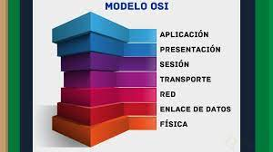

Aquí escribo la definición de la palabra "proceso" desde el punto de vista de los sistemas operativos
A continuación encontrarás las definiciones de las principales palabras y expresiones relacionadas con la asignatura de Sistemas Operativos
Proceso
DEFINICION DE RED INFORMATICA
Una red informática es un conjunto de equipos o dispositivos interconectados que comparten recursos e intercambian información. Dentro de una red informática, encontramos los roles del emisor y del receptor a través de los cuales fluye la información. Estos roles se van intercambiando a menudo, produciéndose así un flujo de la información de manera bidireccional. La estructura de las redes informáticas y su modo de funcionamiento se rige a través de los estándares TCP/IP, basados en el modelo OSI.
TIPOS DE REDES
la interconexión de un número determinado de computadores (o de redes, a su vez) mediante dispositivos alámbricos o inalámbricos que, mediante impulsos eléctricos, ondas electromagnéticas u otros medios físicos, les permiten enviar y recibir información en paquetes de datos, compartir sus recursos y actuar como un conjunto organizado. LAN. Local Area Network, “Red de Área Local”. Son las redes de menor envergadura, como las que podemos instalar en nuestro departamento. MAN. Metropolitan Area Network, “Red de Área Metropolitana”. Se trata de redes de tamaño mediano, óptimas para un campus universitario o el edificio de una biblioteca o empresa de varios pisos, incluso para una porción de una ciudad. WAN. Wide Area Network,“Red de Área Amplia”. Aquí entran las redes de mayor tamaño y alcance, como las redes globales o como Internet.
TRANSMISION INALAMBRICA
En informática y telecomunicaciones, se conoce como red inalámbrica a un tipo de conexión entre sistemas informáticos (o sea, entre computadoras) que se lleva a cabo mediante diversas ondas del espectro electromagnético. Es decir, es una conexión de nodos que no requiere de ningún tipo de cableado o dispositivo alámbrico, ya que la transmisión y recepción de la información se produce mediante puertos especializados. Este tipo de tecnología representa un enorme salto adelante respecto de los métodos tradicionales.
TRANSMISON POR CABLE
Los medios de transmisión guiados están constituidos por cables que se encargan de la conducción (o guiado) de las señales desde un extremo al otro. Las principales características de los medios guiados son el tipo de conductor utilizado, la velocidad máxima de transmisión, las distancias máximas que puede ofrecer entre repetidores, la inmunidad frente a interferencias electromagnéticas, la facilidad de instalación y la capacidad de soportar diferentes tecnologías de nivel de enlace.
MODELO OSI
El modelo de interconexión de sistemas abiertos (ISO/IEC 7498-1), conocido como “modelo OSI”, es un modelo de referencia para los protocolos de la red (no es una arquitectura de red), creado en el año 1980 por la Organización Internacional de Normalización. Se ha publicado desde 1983 por la Unión Internacional de Telecomunicaciones (UIT) y, desde 1984, la Organización Internacional de Normalización (ISO) también lo publicó con estándar. Su desarrollo comenzó en 1977.
PROCESO POR LOTES
Se conoce como sistema por lotes (en inglés batch processing), o modo batch, a la ejecución de un programa sin el control o supervisión directa del usuario que se denomina. Este tipo de programas se caracterizan porque su ejecución no precisa ningún tipo de interacción con el usuario. Generalmente, este tipo de ejecución se utiliza en tareas repetitivas sobre grandes conjuntos de información, ya que sería tedioso y propenso a errores realizarlo manualmente.
MODELO TCP IP
El modelo TCP/IP es usado para comunicaciones en redes y, como todo protocolo, describe un conjunto de guías generales de operación para permitir que un equipo pueda comunicarse en una red. TCP/IP provee conectividad de extremo a extremo especificando cómo los datos deberían ser formateados, direccionados, transmitidos, enrutados y recibidos por el destinatario.
DIRECCIONES IP
Una dirección, es una etiqueta numérica que identifica de manera lógica y jerárquica a una interfaz, habitualmente un dispositivo (computadora, laptop, teléfono inteligente), conectada a la red, que utilice el protocolo de internet o que corresponda al nivel de red del modelo TCP/IP. En principio se usa en la red global, aunque también para aplicaciones.

TARJETA DE RED
La tarjeta de red, también conocida como placa de red, adaptador de red, adaptador LAN, Interfaz de red física, o sus términos en inglés network interface card o network interface controller (NIC), cuya traducción literal del inglés es «tarjeta de interfaz de red» (TIR), es un componente de hardware que conecta un ordenador a una red informática y que posibilita compartir recursos (como archivos, discos duros enteros, impresoras, e internet) entre dos o más computadoras, es decir, en una red de computadoras.
CABLEADO ESTRUCTURADO
El cableado estructurado consiste en cables de par trenzado protegidos (Shielded Twisted Pair, STP) o no protegidos (Unshielded Twisted Pair, UTP) en el interior de un edificio con el propósito de implantar una red de área local (Local Area Network, LAN). Suele tratarse de cables de pares trenzados de cobre, y/o para redes de tipo IEEE 802.3; no obstante, también puede tratarse de fibras ópticas o cables coaxiales.